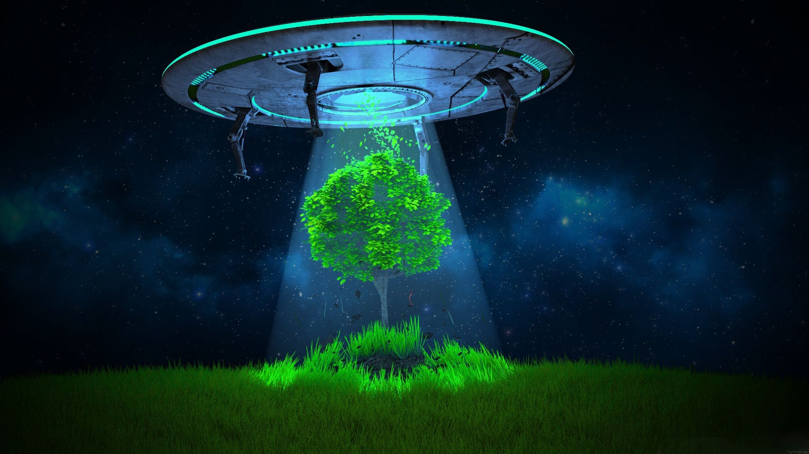

МИСТИКА
Аномальная Беларусь.
Гайд по мистическим местам
Брестская область: Паре, деревня вампиров (100 км от Пинска)
Жители близлежащих деревень от путешествия в Паре отговаривают, но причин не объясняют, а вокруг самой деревни высадили не очень широкий, зато густой осинник – мало ли что. Самые смелые, забредя в Паре из любопытства, отправляются на местное кладбище: могилы здесь накрывают нарубами, большими дубовыми колодами – чтобы покойник не встал. Колоду кладут не сразу, а после Пасхи, а поначалу «запечатывают» могилу огромным валуном все с той же целью. Современные могилы порой попросту заливают цементом – открытыми оставлять все равно не рискуют. Здесь же уфологами был зафиксирован обряд: ночью мужчины шли в лес и рубили дубовый крест высотой в 5-6 метров, женщины в это время ткали разноцветные ленты с тем, чтобы украсить ими крест. Местные жители по уверениям исследователей разговорчивостью не отличаются, от кого защищаются крестами – не говорят: «Так ещё при наших отцах делали, чтобы покойники с кладбища домой не возвращались. Привалят «дубом», и всем спокойно…»
Этнографы к деревне относятся с меньшей опаской, чем уфологи, но с тем же трепетом: находящаяся в самой глубинке пинского Полесья деревушка – единственное место, где вы сможете увидеть сохранившиеся с языческих времен нарубы.
Витебская область: Места посадок НЛО
Всякое аномальное так и тянется к Витебской области: здесь и гиблые места, и круги на полях, и НЛО сюда слетаются едва ли не стайками. При этом в последние годы уфологи все чаще сталкиваются с НЛО треугольной формы, а так как треугольных самолетов в Беларуси официально не заявлено, справедливо причисляют эти запримеченные очевидцами объекты к аномальному. К слову, проанализировав траекторию движения НЛО по Беларуси за последние 26 лет, уфологи выяснили, что большинство из них – 90 процентов! - кучкуется вдоль линии, ведущей из Бреста в Витебск (через Минск). Один из очевидцев сообщил «Уфокому» о встрече с треугольным НЛО близ деревни Лучеса Витебского района. Некие бордовые треугольные объекты заметили жители деревни Тишково (на северо-восток от Витебска). Местные говорят, что «треугольники» могут оказаться новой испытываемой техникой отечественной армии, но армию эту они побаиваются не меньше, чем пришельцев.
Гродненская область: Гольшанский замок
Вадим Черноборов, член белорусского уфологического комитета, филиала международного объединения «Космопоиск», в топ мистических мест Беларуси выносит Гольшанский замок с его Белой дамой. Много лет он занимается исследованием событий, творящихся в Гольшанах: «Жители замка всегда больше боялись духа безродной, бедной и скромной девушки. Ее вина была в том, что хотела как лучше накормить своего мужа-строителя». История Белой дамы такова. В 1618 году бригада строителей на деньги Павла Стефана Сапеги строила костел и монастырь при нем. На беду, у костела постоянно обваливалась одна из стен. Самые опытные каменщики восстанавливали ее, но камни вновь беспричинно рушились вниз. В то время была распространена практика ремонта зданий путем вмуровывания в стену всякой живности, и хорошо, если только кошек. Считалось, что пока мумия заживо замурованного находится внутри здания, она своей психической энергией уберегает камни от разрушения. Волхвы, к которым обратились не хотевшие слыть бракоделами строители, посоветовали замуровать в стену молодую женщину (стройка важная, тут кошкой не отделаешься). Где мирным каменщикам ее взять? Порешили, что пожертвуют чьей-либо из жен, а чтобы страшный жребий самим не тянуть, жертву должна была выбрать судьба – пусть ею будет та, кто первой придет к мужу на стройку. Тертые жизнью и ворчливыми женами прорабы знали, что их благоверные не будут спешить сломя ноги. Первой пришла самая молодая... Тело несчастной и бросили затыкать дыру в стене. Стена и успокоилась...
Директор Национального художественного музея Чеслава Акулевич, с которой встретился «Космопоиск», не только доверяет слухам о Даме, но и сама не раз была очевидицей ее появлений: «Я тоже поначалу не верила, пока несколько лет назад сама ее не увидела. Была в келье одна, вдруг из стены вырастает серая такая полупрозрачная рука и нажимает на выключатель света!.. Хорошо, что вы приехали с приборами для исследования, а то психика на пределе. Женщины у нас увольняются, даже мужчины-археологи отказываются работать!»
Минская область: Мегалиты под Вилейкой (местечко Стебераки)
Мегалиты под Вилейкой уфологи обнаружили в конце 90-х – композиция включала пять камней с похожими рисунками на каждом. На первом и последнем камнях изображен знак, напоминающий лук со стрелой или треугольник на перекладине. При этом все камни были ориентированы строго на север, на Полярную звезду. Беларусь полнится мегалитами, которые многие опрометчиво равняют со здешним Стоунхенджем. Увы, многие из них могут оказаться простыми скоплениями камней, не имеющими ничего общего с мистикой, но исследователи все же надеются на их астрономическое предназначение.
Могилевская область: Чаусские курганы
Некие призраки «без лица» появляются здесь настолько часто, что местные даже якобы привыкли, и уфологов на помощь зовут все реже. Два кургана расположились в районе реке Сталка. Местные утверждают, что дожди порой вымывали из курганов копья, а пастухи боялись засыпать рядом, потому что по ночам якобы слышали то стоны, то звон. Чаусский район привлекает и кладоискателей – среди местных жителей существует поверье о закопанном под одним из холмов золоте. Говорят, по ночам золото выходило из земли – просушиваться.
Бобруйск: Привидения под Новой Альбой
Могилев, хоть и близок к восточным землям, лишенным мистической составляющей, нет-нет да и разродится шаровой молнией или привидением. К слову, один из первых в Беларуси полтергейстов был зарегистрирован именно в Могилеве. А вот деревушка Новая Альба под Бобруйском якобы полнится разномастными призраками разной степени агрессивности и, разумеется, летающими тарелками. Один из жителей деревни сообщил уфологам о том, что в лесу близ деревни до сих пор сохранились три ямы с отполированными краями – якобы результат зависания над лесом летающей тарелки. Свидетелем «зависания» оказалась местная жительница, которая отправилась в лес за грибами, заблудилась и увидела, как с неба «ударил ослепительный луч света»: «Глянула она вбок и увидела, как недалеко пробежали шесть высоченных мужчин. На лбах у них были фонари, как у горняков. Тем временем, свет усилился, и женщину одолел сон – она тут же уснула. Перед самым рассветом просыпается и видит перед собой женщин в белых халатах, подходит к ним и спрашивает, как выйти к дому. И вдруг все женщины исчезают! А рядом появляется дорога, ведущая прямиком в деревню». Правда, уфологи подозревают, что явления НЛО и прочего неопознанного могут быть простыми видениями грибников, долго блуждавших по болотам – никакой аномалии.
Гомельская область: Радиоактивные аномалии
Многие явления НЛО здесь уфологи связывают с близостью к взорвавшемуся реактору ЧАЭС, но местные жители раз за разом сообщают про светящиеся шары и звездообразные объекты то во дворах, то просто в небе. Не будем перечислять все тарелки и прочие объекты, с которыми столкнулись гомельчане, а просто приведем отрывок из письмо жителя деревни Наровля, которое тот прислал уфологам в 2001 году: «Я был дома – в хате услышал шаги, будто кто-то ходит у окон и к дверям, но никто в хату не зашел. Я решил выйти и посмотреть. Вышел. Оказалось, что очень темно. Выходя из-за угла хаты, я увидел на высоте деревьев светящийся шар. Вначале подумал, что это Луна. Но очень большая. Вернулся домой. Я стоял у окна и наблюдал. По оболочке шара начала, как молния, бегать дуга – зигзагообразная и искрящаяся, с востока на запад. А внутри появился человек и стал что-то переносить с западной части на восточную. Опускается, как в люк, нагибается, что-то берет и несет впереди себя в руках. Немного пригнувшись, опускается в люк на восточной стороне, что-то там делает и идет обратно. Так ходил он довольно долго, а корабль искрил и потом успокоился. Человек одет, как в комбинезон, но к телу он не прилегал, как воздухом заполнен. Потом он опустился в люк в западной стороне и больше не выходил. Оболочка шара уплотнилась и искрить перестала. И вдруг произошел выброс изнутри другого шара, он отскочил в метров на 10 и резко остановился, а основной покачался, как на амортизаторах, и затих на месте. Так они постояли, и меньший тихонько двинулся, образовав конусный светящийся хвост, но не острый. Полетел низко, быстро набирая скорость».
Комментарий Вадима Черноброва, члена Белорусского уфологического комитета:
С распадом Союза уфология в Беларуси многое потеряла. Например, за поиски метеоритов в советское время отвечал комитет по метеоритам, который базируется в Москве, а создавать комитеты в национальных республиках не имело смысла, потому что падение метеорита – это чрезвычайно редкое событие. И когда Беларусь стала независимой, оказалось, что подобными исследованиями некому заниматься. Долгое время этим занимался только местный «Космопоиск» - наши ребята без всякого финансирования собирали сведения, выезжали на проверку. Между тем, в Беларуси множество аномальных зон. Я занимаюсь исследованиями не только в нашей стране, а потому имею возможность сравнивать. В Беларуси множество своих территориальных и исторических особенностей, большинство аномалий связаны со средневековыми замками и историями о привидениях. Отсюда и закономерность: чем ближе к востоку Беларуси – тем меньше подобных аномалий